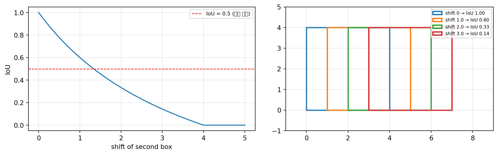
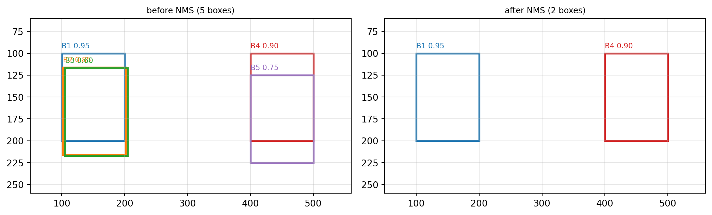
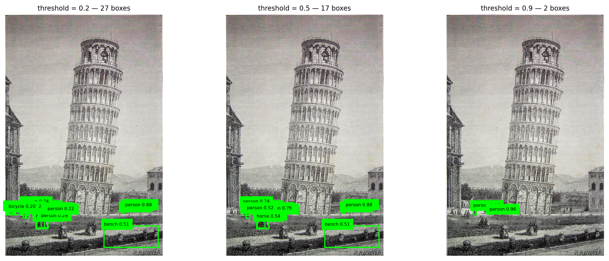
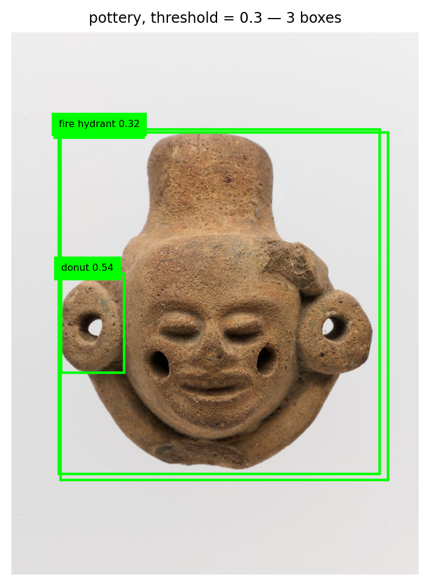
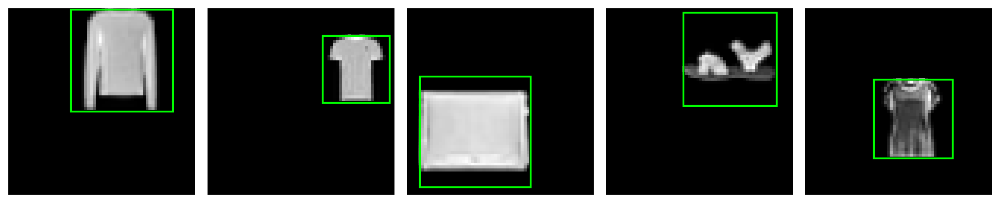
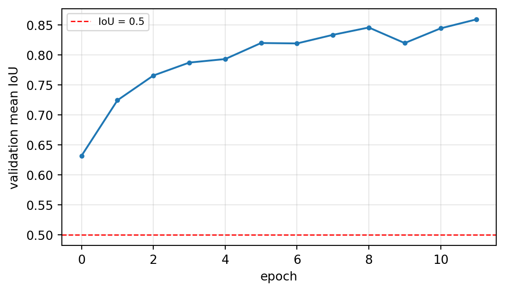
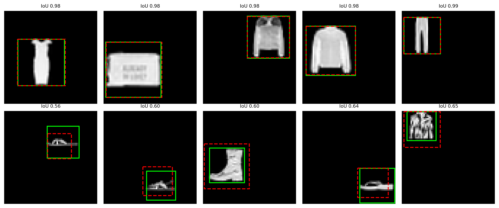

import numpy as np
import pandas as pd
import torch
import matplotlib.pyplot as plt
import matplotlib.patches as patches
from torchvision.ops import box_iou, nms, box_convert
_ = torch.manual_seed(42)실습 9주차: 객체탐지 — IoU와 NMS를 직접 구현하기

이번 주에 익히는 것
| 개념 | 이론과의 대응 |
|---|---|
박스 표기법 xyxy ↔︎ cxcywh |
바운딩 박스 (Ch09) |
| YOLO 라벨 좌표 정규화 | 라벨 포맷 (Ch09) |
IoU 직접 구현 → box_iou |
IoU 손계산 (Ch09) |
NMS 직접 구현 → ops.nms |
NMS 손계산 (Ch09) |
탐지기 출력 boxes/labels/scores |
출력이 가변 개수라는 것 (Ch09) |
| 신뢰도 임계값 | 정밀도–재현율 트레이드오프 (Ch09) |
1. 바운딩 박스 표기법
1-1. 두 가지 표기법
box_xyxy = torch.tensor([[160., 120., 480., 360.]]) # (x1, y1, x2, y2)
box_cxcywh = box_convert(box_xyxy, in_fmt='xyxy', out_fmt='cxcywh')
box_xywh = box_convert(box_xyxy, in_fmt='xyxy', out_fmt='xywh')
print('xyxy (모서리) :', box_xyxy.numpy()[0])
print('cxcywh (중심+크기) :', box_cxcywh.numpy()[0])
print('xywh (왼쪽위+크기) :', box_xywh.numpy()[0])
print('\n되돌리기 :', box_convert(box_cxcywh, 'cxcywh', 'xyxy').numpy()[0])xyxy (모서리) : [160. 120. 480. 360.]
cxcywh (중심+크기) : [320. 240. 320. 240.]
xywh (왼쪽위+크기) : [160. 120. 320. 240.]
되돌리기 : [160. 120. 480. 360.]1-2. YOLO 라벨 — 이미지 크기로 나눈다
Ch09의 수치 예시를 그대로 확인한다. \(640 \times 480\) 이미지의 박스 \((160, 120, 480, 360)\).
W, H = 640, 480
cx, cy, w, h = box_cxcywh[0].tolist()
label = [0, cx / W, cy / H, w / W, h / H]
print('정규화 전 (cx, cy, w, h):', [cx, cy, w, h])
print('정규화 후 :', [round(v, 4) for v in label[1:]])
print('\n라벨 파일 한 줄:', ' '.join(str(round(v, 4)) if i else str(v) for i, v in enumerate(label)))정규화 전 (cx, cy, w, h): [320.0, 240.0, 320.0, 240.0]
정규화 후 : [0.5, 0.5, 0.5, 0.5]
라벨 파일 한 줄: 0 0.5 0.5 0.5 0.5
왜 나누는가
이미지 크기가 달라도 라벨이 그대로 쓰이게 하려는 것이다. \(640 \times 480\) 에서 만든 라벨을 \(1280 \times 960\) 으로 리사이즈해도 0.5는 여전히 0.5다.
def yolo_to_xyxy(label, W, H):
_, cx, cy, w, h = label
cx, cy, w, h = cx*W, cy*H, w*W, h*H
return [cx - w/2, cy - h/2, cx + w/2, cy + h/2]
print('640x480 에서 :', yolo_to_xyxy(label, 640, 480))
print('1280x960 에서:', yolo_to_xyxy(label, 1280, 960))640x480 에서 : [160.0, 120.0, 480.0, 360.0]
1280x960 에서: [320.0, 240.0, 960.0, 720.0]2. IoU
2-1. 직접 구현
\[\text{IoU} = \frac{\text{교집합 넓이}}{\text{합집합 넓이}}\]
def iou(a, b):
"""a, b: (x1, y1, x2, y2)"""
ax1, ay1, ax2, ay2 = a
bx1, by1, bx2, by2 = b
# 교집합 — 왼쪽 위는 더 안쪽(max), 오른쪽 아래도 더 안쪽(min)
ix1, iy1 = max(ax1, bx1), max(ay1, by1)
ix2, iy2 = min(ax2, bx2), min(ay2, by2)
iw = max(0.0, ix2 - ix1) # 겹치지 않으면 음수가 나오므로 0으로 막는다
ih = max(0.0, iy2 - iy1)
inter = iw * ih
area_a = (ax2 - ax1) * (ay2 - ay1)
area_b = (bx2 - bx1) * (by2 - by1)
union = area_a + area_b - inter # 교집합을 두 번 더했으므로 한 번 뺀다
return inter / union2-2. Ch09의 손계산 재현
박스 A \((2, 2, 6, 5)\), 박스 B \((4, 3, 8, 6)\).
A = (2., 2., 6., 5.)
B = (4., 3., 8., 6.)
ix1, iy1 = max(A[0], B[0]), max(A[1], B[1])
ix2, iy2 = min(A[2], B[2]), min(A[3], B[3])
steps = pd.DataFrame([
{'단계': 'A의 넓이', '계산': '(6-2) x (5-2)', '값': (A[2]-A[0])*(A[3]-A[1])},
{'단계': 'B의 넓이', '계산': '(8-4) x (6-3)', '값': (B[2]-B[0])*(B[3]-B[1])},
{'단계': '교집합 너비', '계산': 'min(6,8) - max(2,4)', '값': ix2 - ix1},
{'단계': '교집합 높이', '계산': 'min(5,6) - max(2,3)', '값': iy2 - iy1},
{'단계': '교집합 넓이', '계산': '2 x 2', '값': (ix2-ix1)*(iy2-iy1)},
{'단계': '합집합 넓이', '계산': '12 + 12 - 4', '값': 12 + 12 - 4},
{'단계': 'IoU', '계산': '4 / 20', '값': round(iou(A, B), 4)},
])
print(steps.to_string(index=False)) 단계 계산 값
A의 넓이 (6-2) x (5-2) 12.0
B의 넓이 (8-4) x (6-3) 12.0
교집합 너비 min(6,8) - max(2,4) 2.0
교집합 높이 min(5,6) - max(2,3) 2.0
교집합 넓이 2 x 2 4.0
합집합 넓이 12 + 12 - 4 20.0
IoU 4 / 20 0.22-3. box_iou 와 대조
tA = torch.tensor([A]); tB = torch.tensor([B])
print('직접 구현 :', round(iou(A, B), 6))
print('box_iou :', round(box_iou(tA, tB).item(), 6))직접 구현 : 0.2
box_iou : 0.2box_iou 는 모든 쌍을 한 번에 계산한다.
boxes1 = torch.tensor([[2., 2., 6., 5.], [0., 0., 4., 4.]])
boxes2 = torch.tensor([[4., 3., 8., 6.], [1., 1., 3., 3.], [20., 20., 24., 24.]])
M = box_iou(boxes1, boxes2)
print('shape :', tuple(M.shape), ' = (boxes1 개수, boxes2 개수)')
print(M.numpy().round(4))shape : (2, 3) = (boxes1 개수, boxes2 개수)
[[0.2 0.0667 0. ]
[0. 0.25 0. ]]겹치지 않는 쌍은 0이다.
직접 해보기 ① — 한쪽이 다른 쪽 안에 완전히 들어가면
박스 A (0, 0, 10, 10) 안에 박스 B (2, 2, 4, 4) 가 완전히 들어 있다. IoU를 먼저 손으로 계산한 뒤 확인하시오.
my_answer = None # ← 예상값 (교집합 / 합집합)
got = iou((0., 0., 10., 10.), (2., 2., 4., 4.))
assert abs(my_answer - got) < 1e-6, f'다릅니다. 실제 {got:.4f}'
print('통과', round(got, 4))정답 코드 보기
inter = (4 - 2) * (4 - 2) # 4
union = 10 * 10 + 2 * 2 - inter # 100 + 4 - 4 = 100
print('교집합', inter, ' 합집합', union, ' IoU', round(inter / union, 4))
print('함수 ', round(iou((0., 0., 10., 10.), (2., 2., 4., 4.)), 4))교집합 4 합집합 100 IoU 0.04
함수 0.04작은 박스가 큰 박스 안에 완전히 들어 있어도 IoU는 0.04 다. 합집합이 분모이기 때문이다 — IoU는 크기까지 맞아야 높은 점수를 준다.
2-4. IoU의 감각 — 박스를 밀어 본다
base = torch.tensor([[0., 0., 4., 4.]])
shifts = np.linspace(0, 5, 51)
vals = [box_iou(base, torch.tensor([[s, 0., s+4., 4.]])).item() for s in shifts]
fig, axes = plt.subplots(1, 2, figsize=(11, 3.4))
axes[0].plot(shifts, vals)
axes[0].axhline(0.5, color='red', ls='--', lw=1, label='IoU = 0.5 (관례 기준)')
axes[0].set_xlabel('shift of second box'); axes[0].set_ylabel('IoU')
axes[0].grid(alpha=0.3); axes[0].legend(fontsize=8)
axes[1].set_xlim(-1, 9); axes[1].set_ylim(-1, 5); axes[1].set_aspect('equal')
for s, c in [(0, 'C0'), (1.0, 'C1'), (2.0, 'C2'), (3.0, 'C3')]:
axes[1].add_patch(patches.Rectangle((s, 0), 4, 4, fill=False, ec=c, lw=2,
label=f'shift {s} → IoU {box_iou(base, torch.tensor([[s,0.,s+4.,4.]])).item():.2f}'))
axes[1].legend(fontsize=7, loc='upper right'); axes[1].grid(alpha=0.3)
plt.tight_layout(); plt.show()
박스가 절반만 어긋나도 IoU는 0.33까지 떨어진다. 눈으로는 꽤 겹쳐 보여도 IoU는 박한 점수를 준다.
3. NMS
3-1. 직접 구현
절차는 세 줄이다 — 신뢰도 최고를 채택하고, 그것과 많이 겹치는 것을 지우고, 반복한다.
def nms_naive(boxes, scores, thr=0.5):
order = torch.argsort(scores, descending=True).tolist()
keep = []
while order:
i = order.pop(0) # ① 남은 것 중 신뢰도 최고
keep.append(i)
order = [j for j in order # ② 채택한 박스와 IoU가 임계값 이상이면 제거
if box_iou(boxes[i:i+1], boxes[j:j+1]).item() < thr]
return keep3-2. Ch09의 5박스 시나리오 재현
boxes = torch.tensor([
[100., 100., 200., 200.], # B1
[102., 116., 202., 216.], # B2 — B1과 IoU 0.70
[105., 117., 205., 217.], # B3 — B1과 IoU 0.65
[400., 100., 500., 200.], # B4 — 다른 위치
[400., 125., 500., 225.], # B5 — B4와 IoU 0.60
])
scores = torch.tensor([0.95, 0.85, 0.60, 0.90, 0.75])
names = ['B1', 'B2', 'B3', 'B4', 'B5']
M = box_iou(boxes, boxes)
print('상호 IoU')
print(pd.DataFrame(M.numpy().round(2), index=names, columns=names))상호 IoU
B1 B2 B3 B4 B5
B1 1.00 0.70 0.65 0.0 0.0
B2 0.70 1.00 0.92 0.0 0.0
B3 0.65 0.92 1.00 0.0 0.0
B4 0.00 0.00 0.00 1.0 0.6
B5 0.00 0.00 0.00 0.6 1.0keep = nms_naive(boxes, scores, thr=0.5)
print('직접 구현이 남긴 박스 :', [names[i] for i in keep])
keep_torch = nms(boxes, scores, 0.5)
print('torchvision.ops.nms :', [names[i] for i in keep_torch.tolist()])직접 구현이 남긴 박스 : ['B1', 'B4']
torchvision.ops.nms : ['B1', 'B4']박스 5개가 물체 2개로 정리되었다.
B5(신뢰도 0.75)가 B3(0.60)보다 신뢰도가 높은데도 함께 제거됐다. NMS는 신뢰도 순위가 아니라 누구와 겹치는가로 제거를 결정한다.
fig, axes = plt.subplots(1, 2, figsize=(11, 3.4))
for ax, idxs, title in [(axes[0], range(5), 'before NMS (5 boxes)'),
(axes[1], keep, f'after NMS ({len(keep)} boxes)')]:
for i in idxs:
x1, y1, x2, y2 = boxes[i].tolist()
ax.add_patch(patches.Rectangle((x1, y1), x2-x1, y2-y1, fill=False,
ec=f'C{i}', lw=2))
ax.text(x1, y1-6, f'{names[i]} {scores[i]:.2f}', fontsize=8, color=f'C{i}')
ax.set_xlim(50, 560); ax.set_ylim(260, 60); ax.set_title(title, fontsize=9)
ax.grid(alpha=0.3)
plt.tight_layout(); plt.show()
3-3. 임계값을 바꾸면
rows = []
for thr in [0.1, 0.3, 0.5, 0.7, 0.9]:
k = nms(boxes, scores, thr).tolist()
rows.append({'IoU 임계값': thr, '남은 박스 수': len(k),
'남은 박스': ', '.join(names[i] for i in k)})
print(pd.DataFrame(rows).to_string(index=False)) IoU 임계값 남은 박스 수 남은 박스
0.1 2 B1, B4
0.3 2 B1, B4
0.5 2 B1, B4
0.7 4 B1, B4, B2, B5
0.9 4 B1, B4, B2, B5임계값이 높을수록 덜 지운다(중복이 남는다). 낮을수록 공격적으로 지운다 (가까이 붙어 있는 서로 다른 물체까지 지울 위험이 있다).
직접 해보기 ② — 신뢰도 순서를 바꾸면
scores 에서 B1과 B4의 값을 서로 바꿔(0.90, 0.95) NMS를 다시 돌리시오. 남는 박스가 달라지는가? 왜 그런가?
scores2 = None # ← B1=0.90, B4=0.95 로 바꾼 텐서
keep2 = nms(boxes, scores2, 0.5)
print('원래 :', [names[i] for i in nms(boxes, scores, 0.5).tolist()])
print('바꾼 뒤:', [names[i] for i in keep2.tolist()])정답 코드 보기
scores2 = torch.tensor([0.90, 0.85, 0.60, 0.95, 0.75])
print('원래 :', [names[i] for i in nms(boxes, scores, 0.5).tolist()])
print('바꾼 뒤:', [names[i] for i in nms(boxes, scores2, 0.5).tolist()])
print('\n두 무리가 서로 겹치지 않으므로, 각 무리에서 1등만 남는 결과는 같다.')원래 : ['B1', 'B4']
바꾼 뒤: ['B4', 'B1']
두 무리가 서로 겹치지 않으므로, 각 무리에서 1등만 남는 결과는 같다.4. 사전학습 탐지기의 출력을 직접 본다
분류기의 출력은 클래스 확률 \(K\)개로 고정이지만, 탐지기의 출력은 가변 개수다.
import os, urllib.request
from PIL import Image
from torchvision import transforms
from torchvision.models.detection import (fasterrcnn_resnet50_fpn,
FasterRCNN_ResNet50_FPN_Weights)
os.makedirs('../data', exist_ok=True)
BASE = 'https://raw.githubusercontent.com/pytorch/vision/main/gallery/assets/'
for name in ['leaning_tower.jpg', 'pottery.jpg']:
if not os.path.exists('../data/' + name):
urllib.request.urlretrieve(BASE + name, '../data/' + name)
img = Image.open('../data/leaning_tower.jpg').convert('RGB')
print('이미지 크기 :', img.size)이미지 크기 : (1542, 2364)weights = FasterRCNN_ResNet50_FPN_Weights.DEFAULT
detector = fasterrcnn_resnet50_fpn(weights=weights).eval()
CATEGORIES = weights.meta['categories']
print('학습된 클래스 수 :', len(CATEGORIES))
print('클래스 일부 :', CATEGORIES[1:11])학습된 클래스 수 : 91
클래스 일부 : ['person', 'bicycle', 'car', 'motorcycle', 'airplane', 'bus', 'train', 'truck', 'boat', 'traffic light']x = transforms.functional.to_tensor(img) # 탐지 모델은 0~1 텐서를 그대로 받는다
print('입력 shape :', tuple(x.shape))
with torch.no_grad():
out = detector([x])[0] # 리스트로 넣고 리스트로 받는다
print('\n출력 키 :', list(out.keys()))
print('boxes :', tuple(out['boxes'].shape), ' (박스 개수, 4)')
print('labels :', tuple(out['labels'].shape))
print('scores :', tuple(out['scores'].shape))
print('\n신뢰도는 내림차순으로 정렬되어 나온다:', out['scores'][:5].numpy().round(3))입력 shape : (3, 2364, 1542)
출력 키 : ['boxes', 'labels', 'scores']
boxes : (52, 4) (박스 개수, 4)
labels : (52,)
scores : (52,)
신뢰도는 내림차순으로 정렬되어 나온다: [0.96 0.957 0.898 0.897 0.895]
출력이 몇 개인지는 미리 알 수 없다
분류기는 항상 \(K\)개의 확률을 낸다. 탐지기는 이미지마다 다른 개수를 낸다. 그래서 어디서 자를 것인가(신뢰도 임계값)가 사용자의 몫으로 남는다.
4-1. 신뢰도 임계값
rows = []
for t in [0.05, 0.1, 0.3, 0.5, 0.7, 0.9]:
m = out['scores'] > t
labs = [CATEGORIES[i] for i in out['labels'][m].tolist()]
rows.append({'임계값': t, '박스 수': int(m.sum()),
'검출된 클래스': ', '.join(sorted(set(labs))) if labs else '—'})
print(pd.DataFrame(rows).to_string(index=False)) 임계값 박스 수 검출된 클래스
0.05 52 bench, bicycle, boat, car, chair, horse, person, train, truck
0.10 38 bench, bicycle, boat, car, horse, person
0.30 22 bench, bicycle, horse, person
0.50 17 bench, horse, person
0.70 11 person
0.90 2 person임계값을 낮추면 놓치는 것은 줄지만 허탕이 늘어난다(재현율 ↑, 정밀도 ↓). 반대로 올리면 확실한 것만 남는다. 이 선택은 현장이 무엇을 더 싫어하는가로 정한다.
4-2. 박스를 그려 본다
def draw(img, out, thr, title, ax):
ax.imshow(img)
n = 0
for b, l, s in zip(out['boxes'], out['labels'], out['scores']):
if s < thr:
continue
n += 1
x1, y1, x2, y2 = b.tolist()
ax.add_patch(patches.Rectangle((x1, y1), x2-x1, y2-y1,
fill=False, ec='lime', lw=1.6))
ax.text(x1, y1-6, f'{CATEGORIES[l]} {s:.2f}', fontsize=6,
color='black', backgroundcolor='lime')
ax.set_title(f'{title} — {n} boxes', fontsize=9); ax.axis('off')
fig, axes = plt.subplots(1, 3, figsize=(13, 5))
for ax, t in zip(axes, [0.2, 0.5, 0.9]):
draw(img, out, t, f'threshold = {t}', ax)
plt.tight_layout(); plt.show()
4-3. 학습하지 않은 물체는 어떻게 되는가
이 탐지기는 COCO의 80개 클래스만 배웠다. 그 목록에 없는 물체를 보여 주면?
img2 = Image.open('../data/pottery.jpg').convert('RGB')
with torch.no_grad():
out2 = detector([transforms.functional.to_tensor(img2)])[0]
print('상위 6개 예측:')
for b, l, s in list(zip(out2['boxes'], out2['labels'], out2['scores']))[:6]:
print(f' {CATEGORIES[l]:14s} {s:.3f}')
fig, ax = plt.subplots(figsize=(4.6, 5.2))
draw(img2, out2, 0.3, 'pottery, threshold = 0.3', ax)
plt.tight_layout(); plt.show()상위 6개 예측:
teddy bear 0.716
donut 0.538
fire hydrant 0.325
banana 0.132
vase 0.103
donut 0.061
프로젝트와 직결되는 지점
사전학습 탐지기는 자기가 배운 80개 클래스 중에서만 답한다. 도자기를 보여 주면 “곰인형”이나 “도넛” 같은 엉뚱한 답을 자신 있게 내놓는다. “모르겠다”는 선택지가 없기 때문이다.
내 물체를 찾게 하려면 내 데이터로 파인튜닝해야 한다 — 7주차에서 한 그 일이다.
5. 정밀도와 재현율
탐지에서는 박스가 맞아야 맞은 것으로 친다. 기준은 IoU다.
def match(pred_boxes, gt_boxes, thr=0.5):
"""예측 박스를 정답 박스에 매칭 → TP, FP, FN"""
matched = set()
tp = 0
for pb in pred_boxes:
best_j, best_iou = -1, 0.0
for j, gb in enumerate(gt_boxes):
if j in matched:
continue
v = iou(pb, gb)
if v > best_iou:
best_j, best_iou = j, v
if best_iou >= thr:
tp += 1
matched.add(best_j)
fp = len(pred_boxes) - tp
fn = len(gt_boxes) - tp
return tp, fp, fngt = [(10., 10., 60., 60.), (100., 100., 160., 160.), (200., 30., 250., 90.)]
pred = [(12., 12., 62., 62.), # 정답 1과 잘 맞음
(105., 98., 165., 158.), # 정답 2와 잘 맞음
(300., 300., 340., 340.)] # 허탕
tp, fp, fn = match(pred, gt)
precision = tp / (tp + fp)
recall = tp / (tp + fn)
print(f'TP {tp} FP {fp} FN {fn}')
print(f'정밀도(Precision) = {tp}/({tp}+{fp}) = {precision:.3f} ← 예측한 것 중 맞은 비율')
print(f'재현율(Recall) = {tp}/({tp}+{fn}) = {recall:.3f} ← 있는 것 중 찾은 비율')TP 2 FP 1 FN 1
정밀도(Precision) = 2/(2+1) = 0.667 ← 예측한 것 중 맞은 비율
재현율(Recall) = 2/(2+1) = 0.667 ← 있는 것 중 찾은 비율
현장이 무엇을 더 싫어하는가
- 놓치면 큰일 (안전 점검, 결함 검출) → 재현율을 우선한다. 임계값을 낮춘다.
- 허탕이 비싸다 (자동 분류 후 사람이 재검사) → 정밀도를 우선한다. 임계값을 올린다.
정확도 하나로 정할 수 있는 문제가 아니다.
# 임계값을 바꾸며 정밀도-재현율이 어떻게 움직이는지
rows = []
for thr in [0.3, 0.5, 0.7, 0.9]:
tp, fp, fn = match(pred, gt, thr)
rows.append({'IoU 기준': thr, 'TP': tp, 'FP': fp, 'FN': fn,
'정밀도': round(tp/(tp+fp), 3) if tp+fp else 0.0,
'재현율': round(tp/(tp+fn), 3) if tp+fn else 0.0})
print(pd.DataFrame(rows).to_string(index=False)) IoU 기준 TP FP FN 정밀도 재현율
0.3 2 1 1 0.667 0.667
0.5 2 1 1 0.667 0.667
0.7 2 1 1 0.667 0.667
0.9 0 3 3 0.000 0.000IoU 기준을 엄격하게 올리면 같은 예측인데도 TP가 FP로 바뀐다. 탐지 성능을 비교할 때 IoU 기준을 함께 밝혀야 하는 이유다.
5.5. 완성 — 박스를 예측하는 모형을 학습시킨다
IoU를 계산할 줄 알게 되었으니, 이제 박스를 내놓는 모형을 직접 만든다. 분류는 클래스 번호를 맞히는 문제였고, 박스는 숫자 4개를 맞히는 회귀 문제다.
5-5-1. 문제 만들기
FashionMNIST 물체 하나를 64×64 빈 화면의 임의 위치에 임의 크기로 붙인다. 그 물체를 감싸는 박스 좌표가 정답이다.
import time
from torchvision import datasets, transforms
from torch.utils.data import TensorDataset, DataLoader
import torch.nn as nn
import torch.nn.functional as F
CANVAS = 64
base = datasets.FashionMNIST('../data', train=True, download=True, transform=transforms.ToTensor())
held = datasets.FashionMNIST('../data', train=False, download=True, transform=transforms.ToTensor())
def make_dataset(source, n, seed):
rng = np.random.RandomState(seed)
imgs = torch.zeros(n, 1, CANVAS, CANVAS)
boxes = torch.zeros(n, 4)
for i in range(n):
x, _ = source[int(rng.randint(len(source)))]
s = int(rng.randint(20, 40)) # 크기를 무작위로
obj = F.interpolate(x[None], size=(s, s), mode='bilinear', align_corners=False)[0]
x0 = int(rng.randint(0, CANVAS - s))
y0 = int(rng.randint(0, CANVAS - s))
imgs[i, :, y0:y0+s, x0:x0+s] = obj
boxes[i] = torch.tensor([x0, y0, x0 + s, y0 + s], dtype=torch.float32)
return imgs, boxes
t0 = time.time()
X_tr, B_tr = make_dataset(base, 4000, seed=0)
X_va, B_va = make_dataset(base, 800, seed=1)
X_te, B_te = make_dataset(held, 800, seed=2)
print(f'생성 {time.time()-t0:.0f}초')
print('이미지', tuple(X_tr.shape), ' 박스', tuple(B_tr.shape))
print('첫 박스', B_tr[0].tolist())생성 2초
이미지 (4000, 1, 64, 64) 박스 (4000, 4)
첫 박스 [21.0, 0.0, 56.0, 35.0]fig, axes = plt.subplots(1, 5, figsize=(12, 2.6))
for ax, i in enumerate(range(5)):
axes[ax].imshow(X_tr[i, 0], cmap='gray')
x1, y1, x2, y2 = B_tr[i].tolist()
axes[ax].add_patch(patches.Rectangle((x1, y1), x2-x1, y2-y1,
fill=False, ec='lime', lw=1.6))
axes[ax].axis('off')
plt.tight_layout(); plt.show()
5-5-2. 모형 — 출력이 숫자 4개
torch.manual_seed(42)
locator = nn.Sequential(
nn.Conv2d(1, 16, 3, padding=1), nn.ReLU(), nn.MaxPool2d(2), # 64 → 32
nn.Conv2d(16, 32, 3, padding=1), nn.ReLU(), nn.MaxPool2d(2), # 32 → 16
nn.Conv2d(32, 64, 3, padding=1), nn.ReLU(), nn.MaxPool2d(2), # 16 → 8
nn.Flatten(),
nn.Linear(64 * 8 * 8, 128), nn.ReLU(),
nn.Linear(128, 4), # x1, y1, x2, y2
)
print('출력 shape :', tuple(locator(X_tr[:2]).shape), ' ← 박스 하나당 숫자 4개')
print('파라미터 :', f'{sum(p.numel() for p in locator.parameters()):,}')출력 shape : (2, 4) ← 박스 하나당 숫자 4개
파라미터 : 548,228
좌표는 0~1로 줄여서 학습시킨다
좌표를 그대로(0~64) 쓰면 손실이 커서 학습이 불안정하다. 캔버스 크기로 나눠 0~1로 맞추고, 예측할 때 다시 곱해 되돌린다. 5주차에서 픽셀을 255로 나눈 것과 같은 이유다.
5-5-3. 학습 — 손실은 좌표의 오차
train_loader = DataLoader(TensorDataset(X_tr, B_tr / CANVAS), batch_size=64, shuffle=True)
optimizer = torch.optim.Adam(locator.parameters(), lr=1e-3)
criterion = nn.SmoothL1Loss() # 큰 오차에 덜 휘둘리는 회귀 손실
def mean_iou(model, X, B):
model.eval()
with torch.no_grad():
pred = model(X) * CANVAS
v = box_iou(pred, B).diag() # 대각선 = 짝지어진 예측-정답 쌍
return float(v.mean()), float((v >= 0.5).float().mean()), pred
hist = []
t0 = time.time()
for ep in range(12):
locator.train()
for xb, bb in train_loader:
optimizer.zero_grad()
criterion(locator(xb), bb).backward()
optimizer.step()
m, r50, _ = mean_iou(locator, X_va, B_va)
hist.append(m)
print(f'epoch {ep:2d} 검증 평균 IoU {m:.4f} IoU>=0.5 비율 {r50:.3f}')
print(f'\n학습 시간 {time.time()-t0:.0f}초')epoch 0 검증 평균 IoU 0.6320 IoU>=0.5 비율 0.836
epoch 1 검증 평균 IoU 0.7245 IoU>=0.5 비율 0.947
epoch 2 검증 평균 IoU 0.7658 IoU>=0.5 비율 0.978
epoch 3 검증 평균 IoU 0.7874 IoU>=0.5 비율 0.994
epoch 4 검증 평균 IoU 0.7932 IoU>=0.5 비율 0.995
epoch 5 검증 평균 IoU 0.8200 IoU>=0.5 비율 0.999
epoch 6 검증 평균 IoU 0.8193 IoU>=0.5 비율 0.998
epoch 7 검증 평균 IoU 0.8336 IoU>=0.5 비율 1.000
epoch 8 검증 평균 IoU 0.8459 IoU>=0.5 비율 1.000
epoch 9 검증 평균 IoU 0.8199 IoU>=0.5 비율 1.000
epoch 10 검증 평균 IoU 0.8445 IoU>=0.5 비율 1.000
epoch 11 검증 평균 IoU 0.8595 IoU>=0.5 비율 1.000
학습 시간 23초5-5-4. IoU로 평가한다
plt.figure(figsize=(5.8, 3.4))
plt.plot(hist, 'o-', ms=3)
plt.axhline(0.5, color='red', ls='--', lw=1, label='IoU = 0.5')
plt.xlabel('epoch'); plt.ylabel('validation mean IoU')
plt.legend(fontsize=8); plt.grid(alpha=0.3); plt.tight_layout(); plt.show()
m, r50, pred_te = mean_iou(locator, X_te, B_te)
v = box_iou(pred_te, B_te).diag()
print(f'테스트 평균 IoU : {m:.4f}')
print(f'IoU >= 0.5 : {float((v>=0.5).float().mean()):.3f}')
print(f'IoU >= 0.75 : {float((v>=0.75).float().mean()):.3f}')
테스트 평균 IoU : 0.8635
IoU >= 0.5 : 1.000
IoU >= 0.75 : 0.936분류에서는 정확도를 봤지만, 위치 예측에서는 IoU가 지표가 된다. 그리고 “맞았다”의 기준(0.5냐 0.75냐)에 따라 성적이 크게 달라진다 — 그래서 탐지 성능을 말할 때는 IoU 기준을 반드시 함께 밝힌다.
5-5-5. 예측 박스를 그려 본다
fig, axes = plt.subplots(2, 5, figsize=(12, 5))
order = torch.argsort(v) # IoU가 낮은 것부터
picks = list(order[-5:].tolist()) + list(order[:5].tolist())
for ax, i in zip(axes.ravel(), picks):
ax.imshow(X_te[i, 0], cmap='gray')
gx1, gy1, gx2, gy2 = B_te[i].tolist()
px1, py1, px2, py2 = pred_te[i].tolist()
ax.add_patch(patches.Rectangle((gx1, gy1), gx2-gx1, gy2-gy1, fill=False, ec='lime', lw=1.6))
ax.add_patch(patches.Rectangle((px1, py1), px2-px1, py2-py1, fill=False, ec='red', lw=1.6, ls='--'))
ax.set_title(f'IoU {v[i]:.2f}', fontsize=8); ax.axis('off')
axes[0, 0].set_ylabel('best')
plt.tight_layout(); plt.show()
초록이 정답, 빨강 점선이 예측이다. 아래 줄(IoU가 낮은 것들)을 보면 물체가 흐리거나 작을 때 박스가 어긋난다.
직접 해보기 ③ — 손실 함수를 바꿔 보기
SmoothL1Loss 대신 nn.MSELoss() 로 같은 학습을 돌려 평균 IoU를 비교하시오.
torch.manual_seed(42)
locator2 = None # ← 같은 구조로 새로 만드세요
# 위 5-5-3의 학습 루프를 criterion만 바꿔 돌리세요정답 코드 보기
torch.manual_seed(42)
locator2 = nn.Sequential(
nn.Conv2d(1, 16, 3, padding=1), nn.ReLU(), nn.MaxPool2d(2),
nn.Conv2d(16, 32, 3, padding=1), nn.ReLU(), nn.MaxPool2d(2),
nn.Conv2d(32, 64, 3, padding=1), nn.ReLU(), nn.MaxPool2d(2),
nn.Flatten(), nn.Linear(64 * 8 * 8, 128), nn.ReLU(), nn.Linear(128, 4))
opt2 = torch.optim.Adam(locator2.parameters(), lr=1e-3)
crit2 = nn.MSELoss()
for ep in range(12):
locator2.train()
for xb, bb in train_loader:
opt2.zero_grad(); crit2(locator2(xb), bb).backward(); opt2.step()
m2, r2, _ = mean_iou(locator2, X_te, B_te)
print(f'SmoothL1 : 테스트 평균 IoU {m:.4f}')
print(f'MSE : 테스트 평균 IoU {m2:.4f}')SmoothL1 : 테스트 평균 IoU 0.8635
MSE : 테스트 평균 IoU 0.85756. 정리
IoU 하나로 두 가지를 한다
\[\underbrace{\text{NMS}}_{\text{예측끼리 비교 — 중복 제거}} \qquad \underbrace{\text{TP 판정}}_{\text{예측 vs 정답 — 맞았나}}\]
스스로 확인해 보기
아래 결과를 먼저 예상한 뒤 실행해서 대조한다.
b = torch.tensor([[0., 0., 10., 10.],
[5., 5., 15., 15.],
[0., 0., 10., 10.],
[50., 50., 60., 60.]])
s = torch.tensor([0.9, 0.8, 0.7, 0.6])
print('상호 IoU:\n', box_iou(b, b).numpy().round(3))
print('\nNMS thr=0.5 :', nms(b, s, 0.5).tolist())
print('NMS thr=0.1 :', nms(b, s, 0.1).tolist())
print('\n완전히 같은 박스의 IoU :', box_iou(b[0:1], b[2:3]).item())
print('안 겹치는 박스의 IoU :', box_iou(b[0:1], b[3:4]).item())상호 IoU:
[[1. 0.143 1. 0. ]
[0.143 1. 0.143 0. ]
[1. 0.143 1. 0. ]
[0. 0. 0. 1. ]]
NMS thr=0.5 : [0, 1, 3]
NMS thr=0.1 : [0, 3]
완전히 같은 박스의 IoU : 1.0
안 겹치는 박스의 IoU : 0.0다음 실습
실습 10주차: 텍스트를 숫자로 — 이미지를 떠나 텍스트로 간다. 토큰화와 임베딩을 직접 만들어 본다.